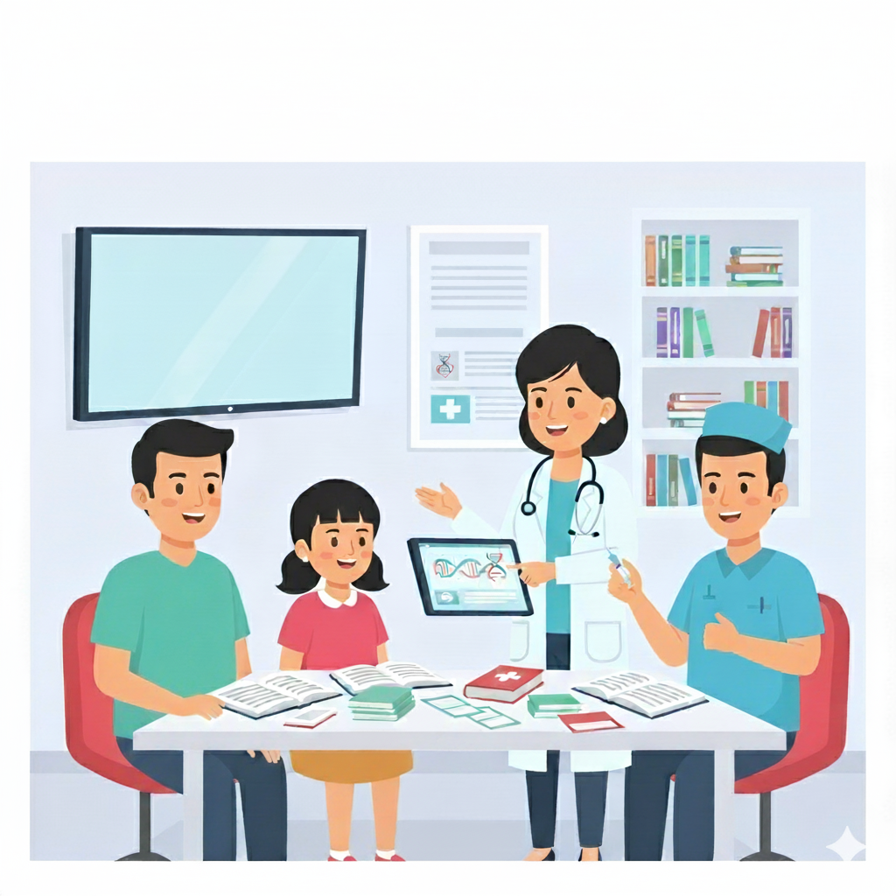

Mengenal dan Mengelola Thalasemia dengan Bijak
Menangani Thalasemia dengan Pengetahuan dan Kasih Sayang
Panduan ini dibuat untuk mendampingi orang tua dalam mengenal Thalasemia lebih dekat.
Jelajahi Peta Edukasi, Yuk!